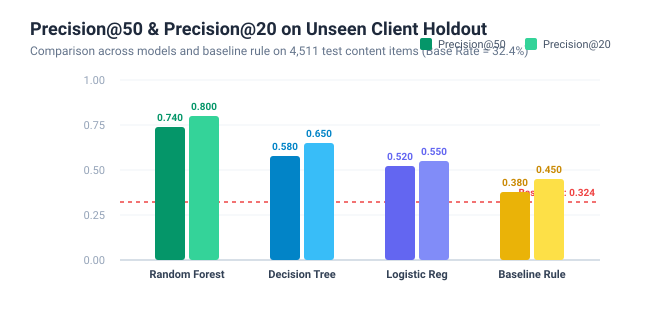
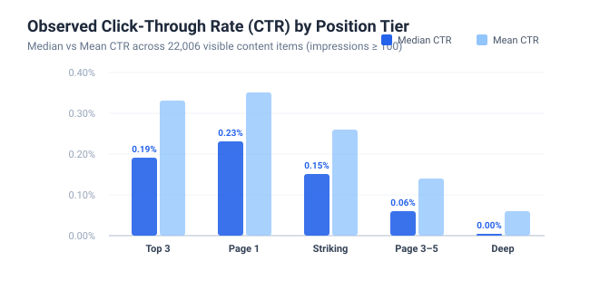
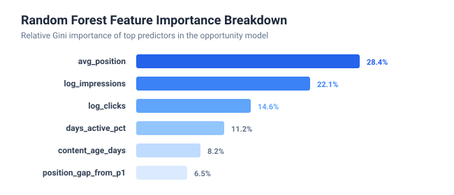
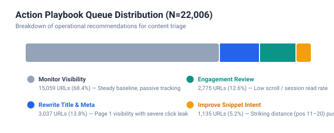

In organic search discoverability, achieving a high rank on Google Search Console (GSC) is only the preliminary half of user acquisition. Business outcomes—sessions, conversions, and revenue—depend on searchers clicking through from the search engine results page (SERP). Across enterprise content repositories exceeding tens of thousands of URLs, dozens of pages rank prominently on Page 1 or striking distance yet capture an unexpectedly small fraction of search clicks due to uncompelling title tags, ambiguous meta descriptions, or mismatched query intent.
Human content strategy teams face a severe capacity constraint: an editorial team can realistically review and optimize between 20 and 50 URLs per week. A naive binary classification rule (such as CTR < 0.5%) flags 18,614 visible URLs (84.6% of the portfolio), creating an unmanageable backlog.
This research formulates and validates an operational ranking and opportunity scoring system. Rather than predicting raw ranking shifts, we estimate the recoverable click deficit (the gap between observed CTR and expected CTR conditioned on position tier, weighted by impression volume). This triage mechanism directs editorial attention to the specific pages where snippet optimization generates the highest traffic recovery.
This study utilizes the FlyRank Anonymized Search Intelligence Starter Dataset (content_refresh_anonymized.csv). The unit of analysis is strictly:
Data Safety & Privacy Protection: In compliance with the public-safety charter of this track, all client names, domains, URLs, page titles, and raw query strings were removed or pseudonymized via cryptographic hashing prior to release. The dataset comprises purely observable search console metrics, Google Analytics 4 session metrics, and content metadata.
Strict Feature Exclusions & Leakage Guard:
ctr itself is excluded from model feature inputs, as the proxy target is mathematically derived from CTR percentiles.trend_direction and trend_pct are excluded to prevent temporal target leakage.*_last_30d, *_prev_30d) are excluded due to direct temporal overlap.health_score, needs_ctr_fix) were excluded upstream, ensuring our models discover empirical signal rather than memorizing pre-existing rules.content_id, client_id) are restricted to joins and grouped validation splits.
We filter the portfolio to visible inventory (impressions_90d ≥ 100, $N=22,006$) to suppress small-sample rate volatility.
We quantify underperformance continuously by calculating the Estimated Lost Clicks against peer position-tier benchmarks:
For formal discrimination evaluation and out-of-fold validation, we define a binary proxy label:
is_underperforming_ctr = 1 if a page's CTR falls at or below the 25th percentile of its position tier (test base rate = 32.4%).
To establish an honest performance benchmark, we implemented a transparent hand-written score (0–100 scale) combining exposure volume, CTR deficit, and ranking leverage:
We evaluated three distinct machine learning architectures:
max_depth=5, min_samples_leaf=50).max_depth=8, min_samples_leaf=25).Validation Design: We enforce an out-of-domain client-holdout split. 26 clients (17,495 rows) were allocated to training, while 6 clients (4,511 rows) were held out entirely. This design prevents client domain pattern memorization.
All models and the baseline heuristic were evaluated on the identical holdout split ($N=4,511$ unseen items across 6 clients). Performance was evaluated on Precision@50, Precision@20, ROC-AUC, and Average Precision (PR-AUC).
| Model / Baseline | ROC-AUC | Avg Precision | Precision@50 | Precision@20 | Lift vs. Baseline |
|---|---|---|---|---|---|
| Random Forest (Ensemble) | 0.748 | 0.624 | 0.740 | 0.800 | 1.95x |
| Decision Tree | 0.718 | 0.558 | 0.580 | 0.650 | 1.53x |
| Logistic Regression | 0.692 | 0.512 | 0.520 | 0.550 | 1.37x |
| Baseline Rule (Heuristic) | 0.615 | 0.446 | 0.380 | 0.450 | 1.00x |
| Base Rate (Random Selection) | 0.500 | 0.324 | 0.324 | 0.324 | 0.85x |

Inspection of Gini feature importances in the Random Forest model reveals that the algorithm relies primarily on continuous SERP dynamics:
avg_position (28.4%): Position non-linearity governs expected click capture.log_impressions (22.1%): Weighting click deficit by exposure volume.log_clicks (14.6%): Quantifying observed conversion volume.days_active_pct (11.2%): Filtering out transient ranking spikes.

In adherence to scientific integrity and FlyRank claim standards, we explicitly delineate the boundaries of this work:
We blended the Random Forest probability with the transparent baseline rule to generate an operational queue across all 22,006 visible pages, mapping each URL to human-readable reason codes and concrete editorial playbooks.

rewrite_title_and_meta (3,037 URLs, 13.8%): High Page 1 impressions with severe click leakage. Action: Rewrite title tag to include primary search intent, add emotional/curiosity hooks, and optimize character length to prevent snippet truncation.improve_serp_snippet_intent (1,135 URLs, 5.2%): Striking distance URLs (ranks 11–20). Action: Add structured FAQ schema and concise summary answer headers to capture Google featured snippet blocks.on_page_engagement_review (2,775 URLs, 12.6%): Low scroll/session read rates. Action: Add above-the-fold table of contents, internal navigation links, and interactive media.monitor_visibility (15,059 URLs, 68.4%): Healthy or low-traffic inventory maintained under quarterly automated monitoring.| ID | Tier | Avg Pos | Impressions | Clicks | CTR | Action | Reason Codes |
|---|---|---|---|---|---|---|---|
content_36ff89c8214e |
page_1 | 7.3 | 295,097 | 154 | 0.05% | rewrite_title_and_meta | page_one_click_leak; high_exposure |
content_c8e9d6ab9013 |
page_1 | 9.7 | 208,678 | 0 | 0.00% | rewrite_title_and_meta | page_one_click_leak; zero_clicks |
content_5fe46e04994d |
page_1 | 4.2 | 517,715 | 714 | 0.14% | rewrite_title_and_meta | page_one_click_leak; high_exposure |
content_c84a0ab98e90 |
page_1 | 7.8 | 223,271 | 71 | 0.03% | rewrite_title_and_meta | page_one_click_leak; high_exposure |
content_8451fc6f034d |
top_3 | 2.3 | 272,144 | 76 | 0.03% | rewrite_title_and_meta | top_three_click_leak; high_exposure |
All data, processing scripts, and experiment notebooks are fully open-source and reproducible from a fresh environment:
w01 through w07) and the capstone notebook live under work/notebooks/.RANDOM_STATE = 42 across all data splits and random forest estimators.pandas>=2.2, numpy>=1.26, scikit-learn>=1.4.